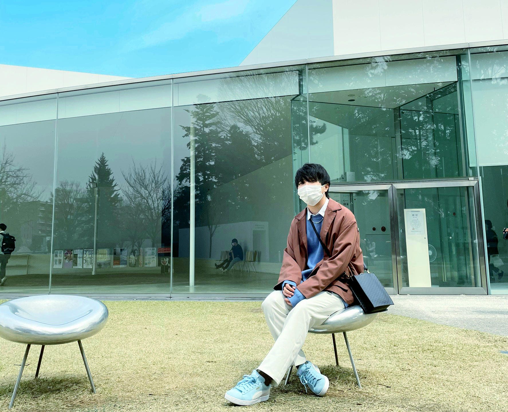

❏Profile
髙橋 岬
２０００／０９／０８ 生まれ
千葉県出身
-about
専門学校では２Ｄグラフィックについて学んでいました。
現在はエンジニアとして一人前になるために日々精進しています。
学生時代はバスケットボール部、バドミントン部に所属しており、その経験から、
仕事をしていく上では礼儀や協調性を特に大切にしています。
また、とても多趣味なことから様々な人と共通の話題で盛り上がり、自然と打ち解けることができます。
その趣味については、特に好きなものを
My Hobby
ページで紹介しているので、良ければご覧ください。